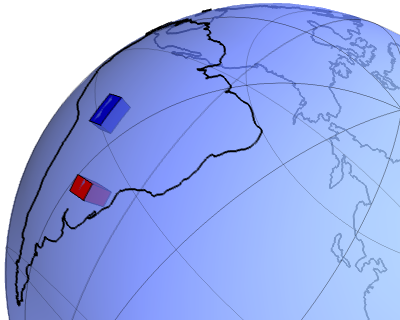
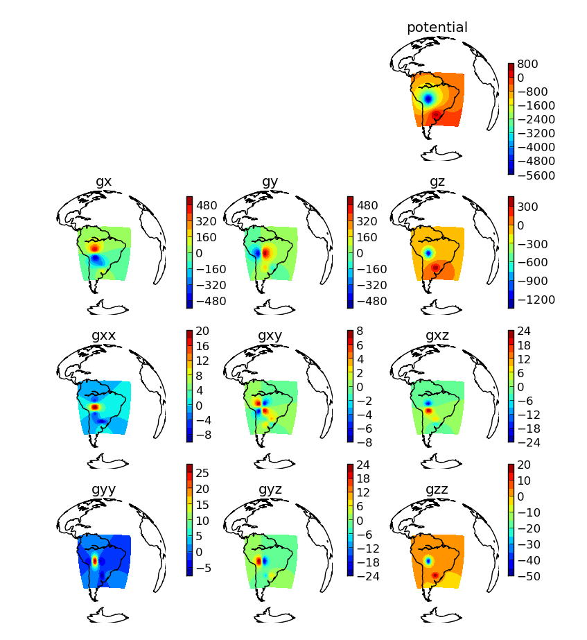

One of the open-source software projects I have been working on is called Tesseroids.
It is a collection of C programs that calculate the gravitational fields (e.g., gravitational potential, gravity anomaly, gradient tensor) of a tesseroid. This is all done in spherical coordinates and can be used to model large regions where one would like to take the Earth's curvature into consideration.

I'm proud of this software because it was my first real programming project. I've been working on it since my undergrad years and it has gone through several refactorings. The main problem with it, though, is that it is written in C. So it is very time consuming and tedious to add new features to it. One of the things that has been on my TODO list for quite some time is exporting to VTK. This would enable 3D plotting with Paraview or Mayavi. Another is adding parallel computations, which would be a pain to do in a portable way in C. But I never got around to actually start any of this. Specially with my PhD in the way and the much more pleasent experience of programming in Python on Fatiando a Terra.
So last week I finally got around to implementing tesseroid calculations and 3D plotting on Fatiando! You can check out the source code on the devel branch on GitHub. Here is a little taste of a 2 tesseroid model and the resulting gravitational fields:
There are 2 scripts on the cookbook that demonstrate the usage. One even shows how to split a large model and calculate in parallel using the multiprocessing package.
This script generates a 40000 tesseroid model of the crust, plots it in Mayavi, calculates the gravity anomaly and plots that using a orthographic projection (using the matplotlib Basemap toolkit).
It's that easy!
Contents © 2013 Leonardo Uieda - Powered by Nikola
Except where otherwise noted, all content is avilable under a CC-BY license.